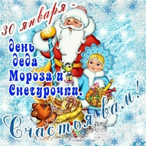

День Деда Мороза и Снегурочки

30 января у знаменитых сказочных персонажей свой необычный праздник — День Мороза и Снегурочки. Без этих волшебных добрых персонажей современные взрослые и дети не представляют зиму и празднование Нового года.
Новогодние праздники уже давно закончились, а мы снова встречаемся с их героями. А всё потому, что прощаться с ними совсем не хочется. Ведь ждать их придётся теперь целый год. Может показаться, что этот праздник отмечается запоздало, но если разобраться, то это древний славянский праздник появился очень давно.
Существует красивая сказка о том, что Снегурочка по прихоти бога любви Леля полюбила человека. Из-за этого, когда пришла весна, она не стала улетать на Север. Как только яркий луч солнца прорезал утренний туман и упал на Снегурочку, она растаяла, превратившись в легкое облачко пара.
Эту историю рассказывали детям наши предки в день праздника. Также, по легенде, зимняя ипостась Велеса – Мороз – был женат на Снежной Царице, дочери Мары и Кощея. У Мороза и Снежной царицы была дочь Снегурочка. Так что изначально она не внучка, а дочь. Когда-то дедушка Мороз был больше известен как восточнославянский дух холода Трескун, позднее его образ трансформировался. Сейчас он представляется людям скорее, как персонаж сказок «Морозко» или «Мороз Иванович».
В прежние времена каждый человек знал, что 30 января отмечают День Деда Мороза и Снегурочки. Этот праздник считался едва ли не важнейшей зимней датой. День Деда Мороза и Снегурочки символически завершает царствование могущественной зимы.
В 1867 году этнограф Александр Афанасьев опубликовал сказки о Снегурочке во втором томе исследования «Поэтические воззрения славян на природу».
А в 1873 году драматург Александр Островский написал пьесу «Снегурочка», в которой отцом сказочной девочки был Дед Мороз, а матерью — Весна-Красна.
В 1882 году композитор Николай Римский-Корсаков написал оперу по пьесе «Снегурочка», она стала популярной. Уже в дореволюционный период педагоги включали образ Снегурочки в сценарии рождественские елок, используя отрывки музыкального произведения.
В 1930-х года в Советском Союзе стали официально отмечать Новый год.
В 1937 году Дед Мороз и Снегурочка впервые вместе появились на елке в Московском Доме Союзов. Снегурочку сделали внучкой из-за преклонного возраста Деда Мороза — посчитали, что так будет логичней.
Дед Мороз и Снегурочка являются главными символами Нового года. Добрый старец в красной шубе с седой головой и его внучка олицетворяют сказку и исполнение желаний. Эти образы складывались на протяжении веков, они являются собирательными и сочетают в себе элементы языческих и христианских обычаев.
В христианской традиции прообразом старца, тайно оставляющего дары под Новый год (Деда Мороза в России и Санта Клауса в западных странах), считается святой Николай Угодник.
В славянской мифологии фигура новогоднего волшебника восходит к тем временам, когда наши предки поклонялись языческим богам Велесу и Перуну.
Считается, что именно Велес, один из наиболее почитаемых божеств в славянском пантеоне, бог плодородия, богатства, знаний и мудрости, может являться прообразом «главного героя» новогодних праздников. Ему поклонялись, прося благополучия и удачи. Он также даровал защиту путешественникам и людям творческим: поэтам, писателям и музыкантам.
Еще один прообраз современного Деда Мороза — языческий дух зимы Морок. Изначально он представлялся нашим предкам мрачным и устрашающим стариком в льняной одежде и лаптях, который бродил по лесам и морозил всё живое.
Именно от его имени произошли выражения «заморочить голову» и «упасть в обморок». Чтобы задобрить зимнего духа, славяне оставляли ему дары (кутью, блины и молоко) на пороге дома или на опушке леса.
С течением времени образ Морока изменился, он превратился в более добродушного Мороза, Трескунца в богатой шубе с посохом в руках, украшенным символом удачи — бычьей головой.
Наши предки верили, что женой Мороза была Царица Снега, у них родилась дочь, которую назвали Снежевиночкой или Снегурочкой. Однажды она влюбилась в человека и не вернулась весной на Север, так как с приходом тепла растаяла. Эта легенда в разных вариациях нашла отражение в славянских сказках.
Наверх